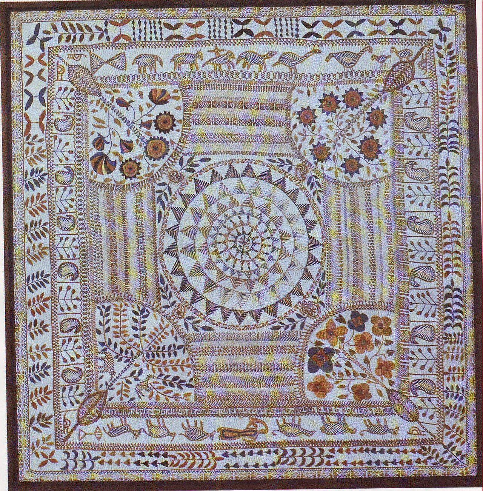

Review: The Role of Women in Preventing Violent Extremism
A short review of an exploratory study by Dr Amena Mohsin, with Mahfuza Liza and Rajan Hossain, on women and violent extremism in Bangladesh, based on fieldwork in Cox's Bazar, Rajshahi and Ghazipur. It notes the study's gender lens, its account of causes of radicalisation (family pressure, taalim, madrassahs, waz mahfils, patriarchy) and its recommendations, and recommends it to students and for public debate.

Terrorism and Counter terrorism have now become important subjects for research and investigation, particularly with the spread of terrorist activities around the world. This has led to serious studies with strategic security issues.
There have been few studies in Bangladesh which seek to analyse the prevalence of terrorists. Counter terrorism has been viewed so far as a security issue which engages the state in direct enforcement by state forces.
This paper is, as the authors suggest, exploratory in its approach. But it is different in its approach and detail. In giving the background to women’s involvement in preventing violent extremism, it discusses the terrorist role of women in different Islamic organisations. This is followed with important indications for further examination of women’s involvement in preventing violent extremism.
As the authors indicate, “Radicalisation is a complex process, which includes both subjective and objective variables.” The paper relies on secondary sources to understand the global situation and its possible link with Bangladesh. For a closer look at the how and why of women’s involvement it has relied upon extensive field research in three locations, Cox’z Bazar, Rajshahi and Ghazipur. Its analyses emphasizes, in particular, on interviews with women who are subjects to radicalisation.
Basically the study, sponsored perhaps for law enforcement agencies sets a precedent in looking at the gender sensitivity of PVE mechanisms in Bangladesh, and the state’s strategies for engaging women in preventing PVE. It traces the causes of women’s radicalisation through its profiling of a sample of women involved with different organisations. Factors such as family pressure, education, taalim, madrassahs, waz mahfils are identified as some causes for their engagement or radicalisation. The patriarchal nature of society is identified as a main reason for their submission or adherence to radicalisation.
In conclusion the paper suggests how women can play a role in PVE programs at different levels of the family, the community and as state actors. And why their involvement is essential to prevent violent extremism. This paper would be a useful background information for university students, but also for initiating a debate on the issue of countering radicalisation amongst women in Bangladesh.